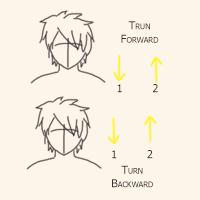

HEAD AND NECK EXERCISE

People with spinal or neck problems are not advised to do this exercise.
STEP 2
Tilt the head forward, as if to touch the chin to the chest.
(Do not actually do this of course) and do not strain, but simply to catch that point of tension.
Return to your base-line position.
Repeat three times.
Very slowly, move the head backward, just to feel that point of tension. Go no further.
Return to your base-line position.
Repeat three times.